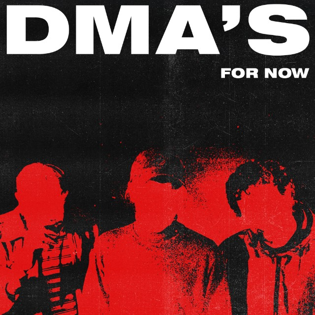
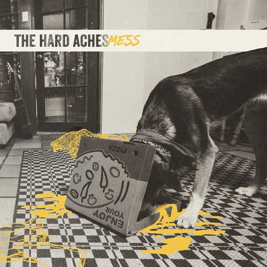
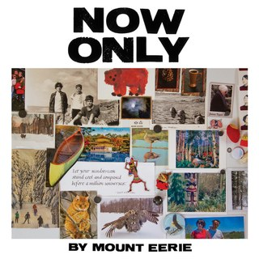
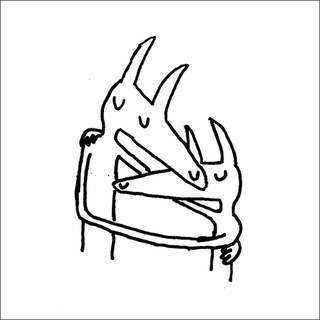
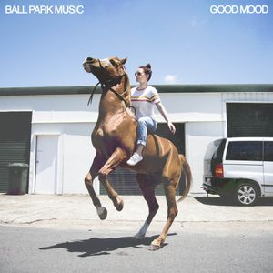
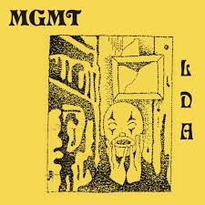
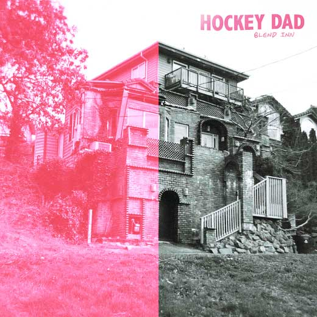
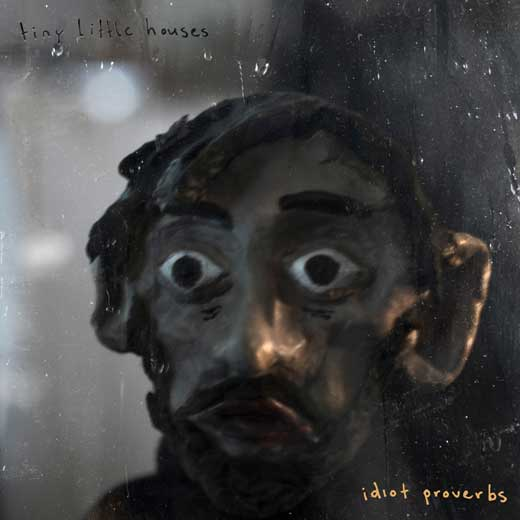

DMA's - For Now

For Now is the sophmore effort from Newtown "Britpop" trio "DMA's"
I want to start off by saying that this band's debut "Hill's End" was in my top ten albums of 2016, and so far, it looks like they're going to achieve that feat again with their new album. The album has a much darker sound than usual, and the band applies this sound well throughout the whole album. All the songs are distuingishable throughout the album yet never stray too far away from the main sound. "For Now" opens with the title track, which starts off with loud fuzzy and kind of angry guitars, and is just banging the whole way through. The singers voice always matches the emotion of the tune perfectly (though this pretty much applies for every track in the album).
"Dawning", the next track, seems to get better every time i hear it. "Time & Money" is a good track but the opening seems irrevelant and lacking, i would also apply this to the track "Break Me". Pretty much all the tracks on here are great. I feel that "Health" is a bit lackluster of a song but it doesn't feel like it doesn't belong on the album, and the follow up "Emily Whyte" is a great ending to the album.
I like to keep my reviews short so i'll just hurry it up here. Flow is good (sometimes a little inconsistent but hardly), production is great, tunes are great. The album clocks in at 47mins but honestly it feels like a lot less time has passed when im listening to this.
It's not perfect, but it's close. I'm feeling a 9/10 on this.
Favourite Tracks : For Now, Dawning, In The Air, Do I Need You Now?, Tape Deck Sick
Least Favourite : Health
The Hard Aches - Mess

Mess is the second album from australian punk duo "The Hard Aches"
So coming into this album having listened to the singles "Mess" and "Happy" i'd say i had some pretty high hopes coming into this album. And coming out, im a bit disappointed, but im still liking the album. The album starts with the single "Mess", except with a 30 second slow drum intro that builds up in volume before dropping into the song, which im preferring over the original. Throughout the album there's some guest vocals from Camp Cope singer Georgia Maq, and imo listening to her on this album is a lot more enjoyable then her last camp cope album.
There's some good production on the tracks and the flow throughout the album is good as well. There's not too much else to talk about on this album, the tunes are good, there's nothing bad but nothing too special (Besides the lead single "Mess"). There's a couple of times as well where lyrics too repetitive and it just seems lazy ("Get Outta My House")
I'm feeling a 7 on this.
Favourite Tracks : Mess, Happy
Least Favourite : there's nothing that speaks out as bad, but i guess either get outta my house or Kat's Song II
Mount Eerie - Now Only

Now only is the newest album by artist Phil Elverum under the "Mount Eerie" moniker. For those of you who don't know phil elverum is, Phil has been involved in the undeground indie folk scene for over 20 years now, originally performing in his band "The microphones". after their spli he went on to do solo work under "Mount Eerie", which was the title of the microphones' last album. He recently grabbed a lot of notice in the indie scene last year with his album "A crow looked at me", which was written shortly after his wife's death. This album gathered widespread acclaim including from yours truly (#2 in my top 10 albums 2017).
This new album feels sort of a sequel to his last effort, yet doesn't. The albums are unargubably related, (the last song on both albums are crow(crow looked at me) & crow pt.2(now only), yet this albums stands out as it's own, with a lot more of a lo-fi feel, correlating with later microphones albums. This album lyrically is about his wife's death, however unlike last time where he talked about how he was coping with loss, he spends the majority of this album talking about the history of their relationship.(edited)
The lyrics on this album are about as vivid as it can get, you could lay down, put this album on & just listen to the lyrics, you will have no struggle wondering what Elverum is on about.
"Lying on the rocks, waiting for the boat to come pick us up
I read the one book we had with us aloud
With my head on your lap, sinking into you
Tintin in Tibet in French" - Tintin in Tibet
The lyrics are definitely the major focus on this album, and it definitely doesn't let down at any point.
Tune wise, Elverum has incoporated some more lo fi elements (especially the intro to distortion), but when the lo-fi isn't there, it does sound a lot like his last album. The sound is still fresh and i like it a lot, however sometimes the tune can feel a little messy.
I'm still deciding whether or not i prefer this to "A Crow Looked At Me", but for the most part i feel Elverum has a bit of a creative streak going here. The album clocks in at 43 minutes with only 6 tracks, and is a reccomend the whole way through.
I'm feeling 8-9/10 on this, definitely closer to the 9 side.
Favourite Tracks: Tintin in Tibet, Distortion, Now Only
Least Favourite: ummmmm...maybe crow pt.2, if i had to pick
Car Seat Headrest - Twin Fantasy (Face To Face)

Twin Fantasy is the "new" album from Car Seat Headrest. I say "new" because this album is a complete rework of his original 2011 release of the same name. The original album was quite lo-fi because of the quality of the hardware is was recorded on, and is honestly quite a mess to listen to. This rework however, makes it a lot more produced (whilst keeping some lo-fi elements), as has a lot of improvements overall. Here's a bunch of quick notes:
- "My boy" is a slow burning opener which launches well into the 13min odyssey "Beach Life-In-Death"
- "Beach Life-In-Death" manages to keep enough variation to be entertaining the whole way through.
- There are a lot of great build-ups and sing along moments on this album.
- When this album does overload itself with a mess of sounds, it still manages to sound epic the majority of the time
- Nervous Young inhumans is great until the closing monologue hits, which is boring as hell. The song closes out so much better on the single version which removed the monologue completely
There's some really great moments/sounds on this album (e.g. the synths in the background during "nervous young inhumans", the large-ass cresendos in "Beach Life-In-Death" & "Famous Prophets") , but the album ruins itself at times with unnessecsary moments that either disrupt the flow/pace or are just plain boring (looking at you "nervous young inhumans"). The album clocks in around 1 hour and 11 mins, and for the most part is amazing. However, the parts that aren't are pretty hard to get through.
I'm feeling 7-8/10, with it more leaning towards the 8.
Favourite Tracks: Beach Life-In-Death, Cute Thing, My Boy
Least Favourite: Nervous Young Inhumans (listen to the single version instead, better than everything else and is not ruined completely by a monologue longer than the song)
Ball Park Music - GOOD MOOD

GOOD MOOD is the 5th studio album from Brisbane indie rock band Ball Park Music. The band has been somewhat prolific in their discography, with the first of these 5 albums coming out back in 2011. More importantly though, the past 4 albums were all good albums (with Museum being my favourite and their previous effot "Every Night The Same Dream" being their worst imo). Their sound has gone from indie folk rock to more funky indie pop over their discography, with their last effort being a somewhat slow paced more rock based album. On GOOD MOOD, it seems the band has gone back to a sound kind of in between their debut ("Happiness & Surrounding Suburbs") & their second album ("Museum"). The production on this album is at times a bit lo-fi, with the closing track "I Am So In Love With You" giving a huge "In The Areoplane Over The Sea" vibe. The album is a bit of a mix of lo-fi & clean production, but it doesn't come off as too messy. The album has a pretty consistent flow to it, as is the case usually with Ball Park Music albums. The album also explores the usage of auto-tune, in a more Bon Iver like usage. It works alright it some moments but can get a little annoying in others.
The album goes for 41 minutes roughly, and is definitely not lacking at any moment of it, but it can feel cheesy or annoying at times. Still, when this album is good, it's really good. There's a lot of interesting sounds that are executed well, songs that are fun to sing along with ("The Perfect Life Does Not Exist","Exactly How You Are", especially the opening line "I don't know the cunts you just to hang around with"), & this is one of the albums where it is fun to go back and listen and notice those little sounds you missed the first time.
8/10
Favourite Tracks: The End Times, The Perfect Life Does Not Exist, Exactly How You Are, If It Kills You, I Am So In Love With You
Least Favourite: So Nice
MGMT - Little Dark Age

Little Dark Age is the 4th album from North American electronic/rock duo MGMT. The first thing i'm going to note this album is that it sounds like a love child between Tame Impala's "Currents" & Daft Punks "Random Access Memories", which is definitely a huge compliment. I didn't go into this album expecting much seeming as I pretty much ignored the title track when it was released as single late last year. However, I am pleased to say I have come out of this album grateful that i have listened to it. Here's a quick bunch of notes:
- The flow throughout this album is great, songs work well with each other.
- The opener "She works out too much" is a great opening track, being quite the earworm as well as being quite enjoyable & danceable. Sets up the tone & sound for the album.
- Little dark age (the song) is great, tiny bit haunting but loving the sound
- "When You Die", the easily most aggresive song on this album, is catchy, despite being one of the weaker songs on the album soundwise (imo)
- The 80's disco pyschodellia sounds on this album are great and executed almost flawlessly.
- The final track "Hand it over" closes out the album nice and calmly, without being boring.
I like this. Like Hockey Dad, i don't think this is perfect, there are moments on this that i did find a bit polarizing. However they are pretty infrequent, so this is a strong reccomend.
9/10
Favourite Tracks: She Works Out Too Much, Little Dark Age, Hand It Over
Least Favourite Track: When You're Small
Hockey Dad - Blend Inn

Blend Inn is the sophomore effort from wollongong surf pop/rock due Hockey Dad. Their debut "Boronia" was an alright effort from start to finish, but lacked conistency and was somewhat forgettable. I'm glad to say however, that this is a much more consistent effort from them.
The album opens with the song "My Stride", which is a good opener, being a great introduction to the pacing and sound of the album. The next track "Homely Feeling" is flowed into nicely and is where the album really starts to show off it's fast pace and hard rock sounds. One of my biggest fears coming into this album was that the flow was going to be terrible and there would just be around 40mins of music instead of an album, but surprisingly throughout the album the flow is decent. Tracks just kind of go well with each other.
The third song "I Wanna Be Everybody" slows down the tempo a bit, but the hard rock sounds are still there and it's banging. The album continues this trend pretty much the whole way through, till it ends in the slow closer "Eggshells".
There's unfortuantely not too much more to talk about in this album, but the album is executed well and is enjoyable the whole way through. I would say that the quality dips a little bit on the song "Danny", but it's still a good song imo.
Production is good, songs are good, flow is good, i don't think there's anything i hate about this album, but i don't also think it's perfect. There are a small amount of moments on this that feel a bit lacking or average.
Im feeling a 8-9/10 on this.
Favourite Tracks : Homely Feeling, I Wanna Be Everybody, Sweet Release, My Stride, Eggshells, Disappoint Me
Least Favourite : Danny
Tiny Little Houses - Idiot Proverbs

The album opens with the lead single "Garbage Bin". Now those who actually read my best of lists from last year would know that i loved this track, placing it at #15 in my top 100 songs poll. The song is a solid opener to the album, however Caleb's voice in this song might be off-putting to some. The lyrics are pessimistic without being cringy, and at times a little witty. The album then immediately moves onto the second single "Entitled Generation". The flow between these two songs is a little...non-existant. The song kind off just starts and it feels a little unnatural to me. Going past that, however, readers of my polls will know i put this song at #88 for last years top songs. So again, i did enjoy this song. "Entitled Generation" is a lot more accessible than "Garbage Bin", to the point where you can say that the tune is a bit "safe" though. The album's flow is a lot better from this song on, with song transitions feeling a lot more natural than the transition from track 1 & 2. The pace of this album stays around the same for most of it, "The Void" being the slowest on the album. Other songs such as "Idiot Proverbs" start off slow and simplistic, but soon/gradually turn faster/louder. The album ends with the song "Drag Me", which is a good ending to the album but unfortuantely not much more. Which is the case to a lot of the songs on this album.
It's a good 36 minutes of music, but unfortunately not much more than that. The album does a great job in making it's songs distuingishable whilst still maintaining their sound, but at times the songs just feel lacking or a bit cheesy ("Short Hair"). The album doesn't stand out to me as much as both of their EP's did, and if i were to reccommend this band to someone I would probably use songs of "You Tore Out My Heart" over this. However, this album is still good and worth a listen.
7/10
Favourite Tracks:
Garbage Bin, Entitled Generation, Idiot Proverbs
Least Favourite:
Short Hair
Obligitory this is just my opinion, also seriously listen to the "You Tore Out My Heart" EP if you haven't, it's good